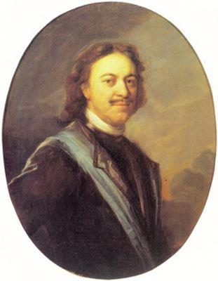

Les liens entre les Bas Pays et la Russie sont très anciens. Démystifions immédiatement un mythe anglais : les premiers à avoir des contacts économiques avec la Russie n'étaient pas les Anglais, comme ils le prétendent, mais les Flamands. Les premières sources de contacts économiques entre la Russie et la Flandre remontent à environ 1100.
Les premiers contacts commerciaux avec les Rous (Русь) ont eu lieu autour du millénaire et plus particulièrement à Kiev. Kiev était alors un centre de la culture russe.
Kiev a servi d'intermédiaire entre l'Europe occidentale et Byzance. Après l'occupation tatare-mongole, le centre s'est déplacé vers le nord, où les marchands flamands étaient déjà actifs. L'Europe du Nord a bénéficié de ce changement. Novgorod et Moscou ont attiré de plus en plus d'attention. Grâce à la création des villes hanséatiques, Bruges est entrée en contact avec Novgorod. Les deux villes sont devenues des sites de stockage importants pour la Ligue hanséatique. Fondée par le Viking Rurik, Veliky Novgorod n'était pas membre de la Ligue hanséatique, bien qu'un bureau hanséatique fût présent. La Ligue hanséatique considérait Novgorod comme le partenaire le plus oriental.
L'histoire de la Flandre ne peut être vue indépendamment des Bas Pays. Même si les Bas Pays sont désormais répartis sur différentes zones (Flandre, Brabant, Zeeuws-Vlaanderen, Gelderland, Hollande,…), ils forment encore aujourd'hui une unité culturelle. Les Bas Pays sont une entité culturelle qui correspond aujourd'hui presque au Benelux complété par la Flandre française.
Les produits recherchés en Russie étaient les tissus flamands, le lin, la bière, le hareng et les produits métalliques. Un document de 1229 parle de Groningue et de la présence flamande à Smolensk. A l'inverse, la soie, les épices, les peaux, le chanvre et autres ont été importés en Europe via Novgorod.
Au début du XVIe siècle, le pouvoir de la Ligue hanséatique a diminué. Les villes individuelles font passer leurs propres intérêts avant ceux des autres. Cela augmenta le pouvoir des villes flamandes. Le bureau hanséatique a été transféré de Bruges à Anvers.
Les Bas Pays et Pierre le Grand
Au milieu du XVIe siècle, la Flandre était la région la plus développée économiquement du monde. Les 5 plus grandes villes de l'ensemble des Bas Pays étaient situées en Flandre et dans le Brabant. À l'époque, Anvers avait la réputation d'être la ville "où l'on peut tout trouver". On connaît au moins 13 familles anversoises qui ont fait du commerce à Narva, une ville qui a été ajoutée à la Russie grâce à Ivan IV (Le Terrible). Le fait que Narva soit devenue russe a donné aux joailliers anversois de nombreuses opportunités. Moskovie, et en particulier la cour du grand-duc, offrait un excellent marché pour les produits des nombreux diamantaires tels que les orfèvres, qui se sont installés à l'Escaut.
Dès l'époque d'Ivan IV le Terrible, contemporain de Guillaume d'Orange, la Hollande s'était fait un nom en Russie en tant que marché de la technologie militaire. Le pays a fourni à la Russie des armes et des mercenaires.
La domination espagnole des Bas Pays méridionaux a poussé de nombreux Flamands à fuir vers le nord. En conséquence, Amsterdam - autrefois peuplée pour les deux tiers par des Flamands - a commencé à se développer. À son tour, le commerce d'Amsterdam avec la Russie a augmenté.
Les Bas Pays étaient en fait une obsession pour le tsar Pierre le Grand. Pierre le Grand a visité les Pays-Bas deux fois vers les années 1700. Il a découvert qu'il pouvait mieux se tourner vers les Pays-Bas pour le développement de la Russie. Il visita incognito le village flamand de Baasrode (qui fait maintenant partie de Termonde) où se trouvait vers 1700 le meilleur chantier naval du monde. De nombreux constructeurs navals flamands ont à sa demande suivi Pierre le Grand vers la Russie pour y développer la construction navale et maintenir la production sur la bonne voie.
La maison du tsar Pierre le Grand (Tsaar Peterhuisje), située dans le quartier russe de la commune néerlandaise de Zaandam, est l'une des plus anciennes maisons en bois des Pays-Bas. Cette petite maison d'ouvrier a été construite en 1632 avec du vieux bois de bateau. C'est dans cette maison que le tsar russe Pierre Ier le Grand a vécu en 1697 lorsqu'il est venu apprendre le métier de charpentier de navires.
En 1717, Pierre le Grand a pris plusieurs cloches de beffrois de la ville de Malines, d'où le nom russe des cloches est est Malinovy Zvon (Son de Malines) . Les cloches restent dans la forteresse Pierre et Paul à Saint-Pétersbourg jusqu'à aujourd'hui
De nombreuses idées acquises aux Pays-Bas ont changé la Russie à jamais. Les soldats et les marchands étaient complétés par des artisans spécialisés dans les arts et les sciences. Il a créé un nouveau drapeau russe. Il s'est inspiré du drapeau néerlandais pour cela : le rouge en haut du drapeau néerlandais était placé vers le bas. De nombreux mots de la langue russe sont d'origine néerlandaise.
La Russie et la Flandre
Le premier Russe connu à vivre en Flandre était Andrej Matveev. C'est un peintre qui a quitté Pierre le Grand aux Pays-Bas pour étudier avec des artistes hollandais à Amsterdam et continuer son chemin à l'Académie des Beaux-Arts d'Anvers en 1723. Il a passé onze ans en Flandre et aux Pays-Bas sous le nom de Carel De Moor.
L'historien et écrivain Pavel Sumarokov a rencontré Bruxelles pour la première fois en 1820. Il a écrit avec beaucoup d'enthousiasme sur la beauté et la culture: «Si je devais choisir une maison en dehors de mon pays, je préférerais Bruxelles».
Si Pavel Sumarokov venait à nouveau à Bruxelles aujourd'hui, il aurait une crise cardiaque.
Dans le premier quart du XIXe siècle, les visiteurs de l'Empire russe sont attirés par les villes flamandes de Bruxelles, Gand et Anvers. Bruxelles était principalement associée à la politique, tandis qu'Anvers, en revanche, était "la capitale de Rubens" - un centre culturel où les aristocrates conservateurs, les fonctionnaires et les professeurs de Russie admiraient les peintures flamandes et les vieilles églises.
Anvers en 1871 par Eugène Boudin
Anna Pavlovna de Russie
Anna était la fille du tsar Pavel I et de Sophia Dorothea Augusta Louisa de Württemberg mieux connue sous le nom de tsarine Maria Fyodorovna. L'empereur Napoléon voulait sa main mais a obtenu un «njet» ferme en réponse.
En 1814, il y avait eu un plan pour marier Anna au prince français Charles-Ferdinand d'Artois, fils du futur roi Charles X, mais comme Anna devrait se convertir au catholicisme immédiatement après le mariage, cela a finalement échoué.
Anna a été présentée comme un prétendant approprié par son frère, le tsar Alexandre - il était un bon ami du prince héritier Guillaume II. Après un voyage de près d'un mois, le prince héritier William et son père, le roi Guillaume Ier, arrivèrent à Saint-Pétersbourg, en Russie, le 20 décembre 1815. La demande en mariage a eu lieu là-bas. Après des négociations sur les croyances religieuses, il a été convenu qu'elle pourrait rester orthodoxe russe.
Le 21 février 1816, elle se maria en grande pompe avec un service orthodoxe russe dans la chapelle de la cour du palais d'hiver avec le futur roi Guillaume II. Le couple est resté en Russie pendant six mois.
Anna a subi un choc culturel à son arrivée aux Pays-Bas ; la distance au peuple était beaucoup plus proche aux Pays-Bas que dans sa Russie natale.
Anna préférait rester à Bruxelles, mais au souhait de Guillaume Ier, ils alternaient leur séjour avec des palais du nord. Jusqu'au séparatisme belge en 1830, le couple prince-héritier vivait alternativement à La Haye et à Bruxelles.
La Russie et la nouvelle Belgique à partir de 1830
En 1830, une révolution séparatiste provoqua la séparation des Bas-Pays méridionaux de la mère patrie des Pays-Bas. Le nom du nouveau pays est devenu « Belgique ».
La nouvelle Belgique s'est ouverte à la Russie à la fin des années 1840 lorsque le pays a été visité par Nikolaï Grech, journaliste, écrivain, rédacteur et éditeur russe.
Le nombre de Russes en Belgique a commencé à augmenter parallèlement au développement des relations commerciales entre les deux pays au milieu du XIXe siècle. Dans le même temps, les Russes, venus en Belgique entre 1830 et 1861, peuvent être divisés en différents groupes : scientifiques et chercheurs, étudiants des universités de Bruxelles, Gand et Liège, voyageurs et hôtes des stations médicales (principalement Ostende), ainsi que les libéraux et les révolutionnaires.
Mais la majorité des Russes venus en Belgique étaient simplement des voyageurs curieux, attirés par l'histoire des villes, de l'architecture et de la sculpture, ainsi que des ports flamands et du premier chemin de fer du continent.
La petite communauté russe, sous la tutelle de l'ambassadeur, le prince Nikolai Orlov, ne cessait de grandir. Avec son soutien, la première église orthodoxe de Belgique, la Sint-Niklaaskapel, a été construite en 1862. Elle est située près de l'ambassade de Russie à Bruxelles (commune d'Uccle).
Au milieu du XIXe siècle, la Belgique, fondée par des loges maçonniques françaises et essayant ainsi d'imiter la France en tout, était l'un des centres du radicalisme politique (de gauche) européen. L'un des révolutionnaires les plus célèbres à rester à Bruxelles était Karl Marx.
Au début des XIXe et XXe siècles, les syndicats et coopératives ouvrières belges sont devenus de véritables lieux de pèlerinage pour l'intelligentsia russe d'esprit occidental. Le succès politique du Parti ouvrier belge a attiré de nombreux émigrants politiques russes. En 1913, un agent secret russe rapporta de Paris à Saint-Pétersbourg : « En raison de la taille des colonies russes, les villes belges peuvent être placées dans l'ordre suivant : Liège, Bruxelles, Anvers, Verviers, Gand et Mons ». En 1910, il y avait environ 300 émigrants politiques russes rien qu'à Anvers. A la recherche de contacts avec les mencheviks, VIadimir Lénine rencontra plusieurs émigrants politiques russes locaux à Liège, Bruxelles et Anvers en 1911.
Des centaines d'étudiants russes ont étudié dans des universités belges, des écoles commerciales et techniques, dont la sœur de Lénine, Maria Lenina, qui a fréquenté la Nouvelle Université de Bruxelles en 1898.
Étudier en Belgique était moins cher qu'en France ou en Suisse ; L'hospitalité envers les étudiants étrangers a également joué un rôle important. Entre 1905 et 1912, les étudiants de Russie et de Pologne représentaient 30 à 40% du nombre total d'étrangers à l'Université de Gand. De 1903 à 1912, la part des étudiants de Russie à l'Institut du Commerce d'Anvers parmi les étrangers est passée de 29% à 63%, et la part dans la masse totale des étudiants de 12,5% à 36%.
Les liens culturels nés de l'intérêt de l'aristocratie russe pour les peintres de l'école flamande (de grandes collections de leurs peintures ont été rassemblées par les Bezborodko, les Stroganov, les Yusupov, les Sheremetev), dans leur intensité à la fin du XIXe - début du XXe siècle, n'étaient pas inférieurs aux économiques. Repin, Serov, Makovsky ont exposé en Belgique, Rubinstein, Borodin, Rimsky-Korsakov ont connu le succès.
Noce dans une famille boyarde, également appelé La Fête de mariage russe est un tableau réalisé en 1883 par l'artiste russe Constantin Makovski (1839-1915)
Anvers occupait une place particulière. La Russie exportait du pain, du bois, du lin et de la fourrure, des produits en bronze et de l'huile vers l'Europe occidentale via ses ports. En 1910, plus de personnes de l'État russe (y compris le Royaume de Pologne) vivaient à Anvers (3616) que d'Autriche-Hongrie (3365), de France (2159) et de Grande-Bretagne (1602) plus proches. Avant la Première Guerre mondiale, les russes constituaient en nombre la troisième plus grande diaspora à Anvers, après les Néerlandais et les Allemands.
La Russie et la Belgique depuis la Révolution
La révolution russe de 1917 et la nationalisation ultérieure des biens étrangers, ainsi que le refus des bolcheviks de payer les dettes extérieures russes, ont longtemps bloqué la possibilité de reprendre les relations bilatérales. Les grandes entreprises belges faisant des affaires avec la Russie avant la guerre ont été gravement endommagées et des dizaines de milliers de petits investisseurs qui ont investi leur fortune dans des actions et des obligations russes ont été ruinés.
Après la révolution de février, de nombreux émigrants politiques tels que Plékhanov et Kropotkine sont retournés en Russie. Mais la révolution a également marqué le début d'une nouvelle étape pour la diaspora russe en Belgique, car l'émigration de Russie vers la Belgique après octobre 1917 a pris un caractère presque exclusivement politique antibolchevique et plus tard antisoviétique. La Belgique est devenue l'un des centres de l'émigration militaire et politique russe du mouvement blanc.
Environ dix mille Russes ont fui vers la Belgique. En 1920-1922, le général A.I. Denikin, ancien commandant en chef de l'armée des volontaires, puis des forces armées du sud de la Russie, s'est réfugié temporairement à Bruxelles.
Dans les années 1920, une autre figure marquante du mouvement blanc, le baron P.N. Wrangel. Le 1er septembre 1924, l'ancien commandant en chef de l'armée blanche en Belgique fonda l'Union militaire générale russe (ROVS) - la plus ancienne organisation militaire antibolchevique russe établie en exil pour poursuivre la cause du mouvement blanc. Il y avait aussi d'autres organisations politiques et militaires d'émigrants russes en Belgique : le syndicat des ouvriers chrétiens russes en Belgique, le syndicat des officiers de la ville de Liège, etc.
L'écrivain russe turbulent Ivan Nazhivin a également émigré en Belgique. C'était un patriote et un fan de Lev Tolstoï. Son séjour en « Belgique catholique » lui sentait comme un séjour en enfer, à la suite duquel il a craché pas mal de bile sur la Belgique.
L'Église orthodoxe s'est développée en centre de l'émigration postrévolutionnaire russe vers la Belgique. Les églises orthodoxes, considérées par de nombreux émigrants comme le seul lien avec leur patrie perdue, sont devenues des centres qui unissaient les réfugiés russes autour d'elles. De nouvelles paroisses orthodoxes ont commencé à ouvrir dans toute la Belgique.
Dans la première moitié des années 1940, la Belgique a connu la même situation unique qui caractérisait de nombreux autres pays où les émigrants russes de la première vague se sont installés et ont été conquis par les puissances de l'Axe pendant la guerre. Le mouvement partisan en Belgique était assisté par environ 500 citoyens soviétiques.
En août 1943, dans le nord-est de la province belge du Limbourg, la brigade partisane russe « Pour la patrie ! » dirigé par le lieutenant-colonel de l'Armée rouge K. Shukshin, qui participa à la libération de Bruxelles et aux batailles près d'Anvers à l'automne 1944. En outre, sous la direction de N. Zubarev, un autre détachement russe, composé de 10 à 12 hommes, a combattu dans les Ardennes et Zubarev lui-même a reçu trois médailles du Front d'indépendance belge.
Des tombes de résistants russes tombés au combat se trouvent partout dans les cimetières belges.
Guerre froide
Pendant la guerre froide, les relations entre l'Union soviétique et la Belgique, où le siège de l’OTAN - fondé contre la Russie - était installé, étaient plutôt tendues.
Néanmoins, les Russes ont écrit de nombreuses pages glorieuses de la culture et de la science belges dans la seconde moitié du XXe siècle. Par exemple, on peut citer un scientifique exceptionnel, lauréat du prix Nobel de chimie en 1977 Ilya Prigogine, qui a longtemps vécu en Belgique et est devenu membre étranger de l'Académie des sciences de l'URSS en 1982, ainsi que l'artiste Galina Serebryakova. Des ingénieurs russes ont dirigé la conception et la construction de l'Atomium, une molécule de fer un milliard de fois agrandie installée à l'Exposition universelle de 1958 à Bruxelles.
Après 1991, la fin de l'Union soviétique et la nouvelle Russie moderne
L'effondrement de l'URSS en 1991 a déclenché une nouvelle vague d'émigration russe à grande échelle vers la Belgique, augmentant considérablement le nombre de la diaspora russophone.
À partir des années 90 du siècle dernier, l'Europe occidentale et donc aussi la Flandre (dans une plus large mesure aussi la Belgique) ont été inondées par ce que certains appellent « les matrioshkas ». La situation économique était si dramatique sous le règne d'Eltsine que de nombreuses (très) jeunes femmes russes en Europe voulaient collecter « l'argent qui tombe du ciel gratuitement dans l'UE ». Une fois arrivés en Belgique, ils ont remarqué que ce n'est pas toujours le cas. Dans les années 1990, de nombreuses beautés russes ont disparu derrière les vitrines de bars offrant des services spéciaux. Certains contre leur volonté, d’autres avec pas mal d'enthousiasme.
Le « tourisme de bonheur » a également fortement augmenté. La jeune femme russe s'est mariée non par amour, mais par intérêt matériel. Un pauvre belge sans emploi qui rêvait d'une belle femme russe pourrait mettre son rêve de côté. Il n'avait aucune chance. « Trop pauvre et on ne vient pas en Belgique pour ça ... ».
Les dames russes importées trouvaient principalement des partenaires occidentaux riches à très riches. Après une moyenne de 5 ans, le divorce était un fait parce que les papiers et la nationalité étaient en vigueur. L'homme laissé perplexe ne pouvait que payer une pension alimentaire. Pour plusieurs, le rêve de mariage est devenu un cauchemar annoncé.
Les conversations avec les femmes russes importées en Belgique montrent que la plupart crachent sur leur pays d'origine souffrant d’un comportement antipatriotique et un matérialisme extrême. Une partie importante n'hésite pas à sauter en série d'un mariage à un autre.
À partir du début du siècle, le nombre de femmes russes souhaitant visiter les grottes d'Ali Baba occidentales a considérablement diminué. L'économie russe s'en est mieux tirée. Cela est devenu très stable, de sorte que la fuite économique était beaucoup moins nécessaire.
Aujourd'hui, la plupart des Russes ne veulent plus fuir, à l'exception des matérialistes que l'on trouve partout. L'année dernière, même 150 000 Russes sont rentrés dans leur propre pays, dont 30 000 de l'Union européenne.
Certains citoyens russes, titulaires d'un passeport russe, sont ethniquement différents. La guerre de Tchétchénie a poussé une importante partie des Tchétchènes à adopter le statut de réfugié politique en Belgique. Au tribunal, presque tous les Tchétchènes ont déclaré « que l'armée russe a massacré tout le village, à l'exception de moi. J'étais le seul à pouvoir m’échapper. » Avec des mensonges et des tromperies, plusieurs Tchétchènes ont obtenu des documents et des avantages belges.
Dans le Waasland (à l'ouest d'Anvers), il y a par exemple une vraie mafia tchétchène qui fait chanter les commerçants. Ces « réfugiés » sont extrêmement agressifs et totalement anti-russes.
En 2017, 12.259 personnes de nationalité russe résidaient en Belgique de manière permanente et n'avaient pas la nationalité belge. La majorité (7190 personnes – 59 %) vivaient en Flandre, 3103 (25 %) - en Wallonie et 1234 (10 %) - à Bruxelles.
Plusieurs citoyens russes ont pris la nationalité belge. Par exemple, entre 2008 et 2016, quelque 12.182 ressortissants russes ont reçu un passeport belge, occupant la quatrième place parmi les étrangers ayant obtenu la nationalité belge par pays d'origine. 63 % d'entre eux résidaient de façon permanente en Flandre, 29% - en Wallonie et 8 % - à Bruxelles, ce qui correspond à peu près à la répartition géographique des citoyens russes vivant en Belgique sans nationalité belge.
Selon les statistiques, environ 60000 personnes nées en Russie vivaient en Belgique en 2018, mais ces chiffres ne sont pas très précis: ils incluent également les personnes nées dans l'ex-URSS.
En 2012, l'ambassade de Russie en Belgique a estimé le nombre de Russes de langue russe et de souche dans le pays à 70 000, et l'association qui intègre la communauté russophone dans la «Maison de la Russie» en Belgique - à 100 000 personnes.
L'archidiocèse Bruxelles-Belgique de l'Église orthodoxe russe compte près de deux douzaines de paroisses, dont des paroisses de la cathédrale Saint-Nicolas à Bruxelles, de la Nativité du Christ à Anvers et d'autres. Les autorités belges font preuve de bonne volonté envers l'orthodoxie - en 1985, l'orthodoxie a été officiellement reconnue en Belgique.
La Russie et la Flandre aujourd'hui
En 2017, il y avait 77.000 touristes russes en Flandre, soit 157.000 nuitées. Gand et Bruges ont un énorme attrait dans toute la Russie.
En 2019, la Flandre a exporté pour 3 milliards d'euros de biens et services (produits pharmaceutiques, machines, plastiques, produits chimiques ...) vers la Russie. Les importations se sont élevées à 7 milliards d'euros.
Les sanctions contre la Russie ont fait beaucoup souffrir les agriculteurs flamands. L'horticulture flamande était ou est au bord de la faillite car les fruits flamands ne sont pas autorisés à traverser la frontière en raison des contre-sanctions russes. Le gouvernement belge soutient pleinement les sanctions imposées par l'Amérique, sans regarder les conséquences économiques pour ses propres entrepreneurs. L'adhésion à l'UE et à l'OTAN coûte des milliards d'euros aux Flamands.
Malgré les sanctions, les échanges entre la Belgique et la Russie augmentent chaque année. Pour le dire franchement : le gaz russe et la bière belge sont échangés à votre guise.
Les blocus médiévaux des pays voisins concurrents, les révolutions, la guerre froide et les sanctions ne sauraient rompre les liens historiques entre la Russie et les Bas Pays et, en particulier, la Flandre. Des tableaux des plus grands maîtres flamands et hollandais se trouvent dans les musées de Moscou et de Saint-Pétersbourg. Jusqu'à récemment, Tijl Uilenspiegel était « littérature obligatoire » dans les écoles russes. A Moscou, on peut apprendre le néerlandais à un haut niveau, les politiciens russes sont très bien informés sur l'histoire des Pays-Bas et donc aussi de la Flandre. La Flandre a des liens officiels spéciaux avec la région de Saint-Pétersbourg.
Inventé et développé en Flandre, le carillon est appelé « Malinovy Zvon » (Малиновый звон) en Russie, du nom de la ville flamande de Malines. Cela signifie à la fois « son de Malines » mais aussi « son framboise ».
Vous pouvez sans aucun doute trouver une grande sélection de bières belges dans les grands magasins.
Comme l'a dit Antonio Gramsci, «il faut d'abord occuper le domaine culturel ». Tant que les Bas Pays et la Russie maintiendront des liens culturels, les liens resteront. La politique anti-russe de l'OTAN belge ne peut rompre les bonnes relations entre les peuples des Bas Pays et les peuples de Russie.
K.R.
SOURCES
Livres écrits par Wim Coudenys.
Livres écrits par Emmanuel Waegemans.
Livre d'Eric Wijnroks «Commerce entre la Russie et les Pays-Bas, 1560-1640.
Partager cette page